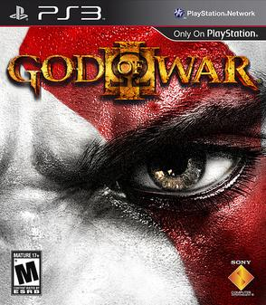

God of War is an action-adventure game franchise created by David Jaffe at Sony's Santa Monica Studio. It began in 2005 on the PlayStation 2 (PS2) video game console and has become a flagship series for PlayStation, consisting of nine installments across multiple platforms. Based on ancient mythologies, the story follows Kratos, a Spartan warrior and later the Greek God of War, who was tricked into killing his family by his former master, the original Greek God of War Ares. This sets off a series of events that leads to wars with the different mythological pantheons. |
Series
-
God of War
God of War is an action-adventure hack and slash video game developed by Santa Monica Studio and published by Sony Computer Entertainment (SCE). First released on March 22, 2005, for the PlayStation 2 (PS2) console, it is the first installment in the series of the same name and the third chronologically. Loosely based on Greek mythology, it is set in ancient Greece with vengeance as its central motif. The player controls the protagonist Kratos, a Spartan warrior who serves the Olympian gods. The goddess Athena tasks Kratos with killing Ares, the God of War and Kratos' former mentor who tricked Kratos into killing his wife and daughter. As Ares besieges Athens out of hatred for Athena, Kratos embarks on a quest to find the one object capable of stopping the god once and for all: Pandora's Box.
-
God of War II
God of War II is an action-adventure hack and slash video game developed by Santa Monica Studio and published by Sony Computer Entertainment (SCE). First released for the PlayStation 2 (PS2) console on March 13, 2007, it is the second installment in the God of War series, the sixth chronologically, and the sequel to 2005's God of War. The game is based on Greek mythology and set in ancient Greece, with vengeance as its central motif.The player character is protagonist Kratos, the new God of War who killed the former, Ares. Kratos is betrayed by Zeus, the King of the Olympian gods, who strips him of his godhood and kills him. Slowly dragged to the Underworld, he is saved by the Titan Gaia, who instructs him to find the Sisters of Fate, as they can allow him to travel back in time, avert his betrayal, and take revenge on Zeus.
-
God of War III
God of War III is an action-adventure hack and slash video game developed by Santa Monica Studio and published by Sony Computer Entertainment. First released for the PlayStation 3 on March 16, 2010, it is the fifth installment in the God of War series, the seventh chronologically, and the sequel to 2007's God of War II. Loosely based on Greek mythology, the game is set in ancient Greece with vengeance as its central motif. The player controls the protagonist Kratos, the former God of War, after his betrayal at the hands of his father Zeus, King of the Olympian gods. Reigniting the Great War, Kratos ascends Mount Olympus until he is abandoned by the Titan Gaia. Guided by Athena's spirit, Kratos battles monsters, gods, and Titans in a search for Pandora, without whom he cannot open Pandora's Box, defeat Zeus, and end the reign of the Olympian gods to have his revenge.
-
God of War Ragnarök

God of War Ragnarök is an action-adventure game developed by Santa Monica Studio and published by Sony Interactive Entertainment. It was released worldwide on November 9, 2022, for both the PlayStation 4 and PlayStation 5, marking the first cross-gen release in the God of War series. It is the ninth installment in the series, the ninth chronologically, and the sequel to 2018's God of War. Loosely based on Norse mythology, the game is set in ancient Scandinavia and features series protagonist, Kratos, and his now teenage son, Atreus. Concluding the Norse era of the series, the game covers Ragnarök, the eschatological event which is central to Norse mythology and was foretold to happen in the previous game after Kratos killed the Aesir god Baldur.
More Games
Video gaming brand that consists of five home video game consoles, two handhelds, a media center, and a smartphone, as well as an online service and multiple magazines. The brand is produced by Sony Interactive Entertainment, a division of Sony; the first PlayStation console was released in Japan in December 1994, and worldwide the following year. |
About Us |